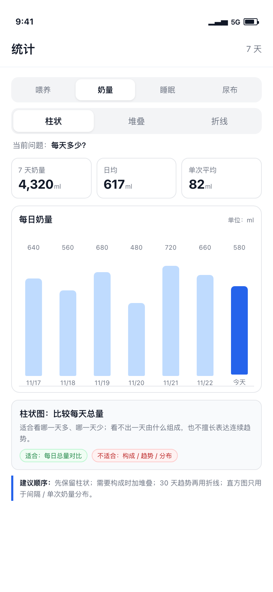
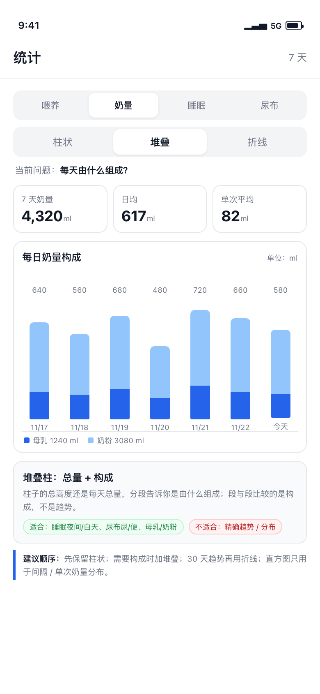
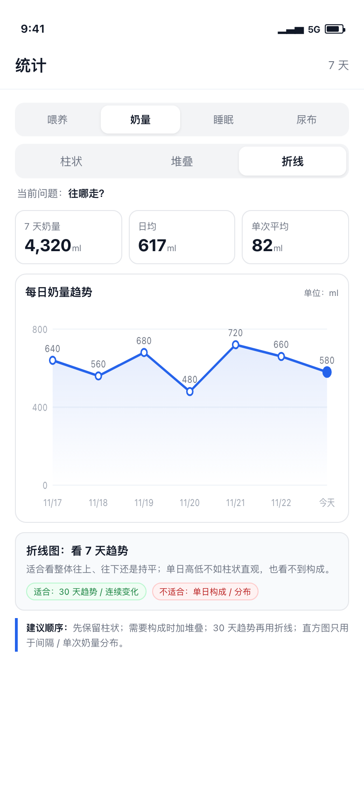
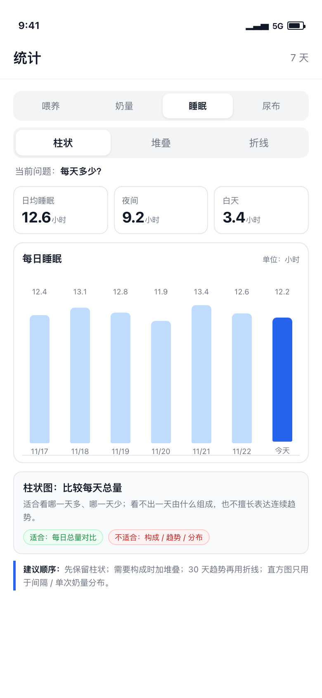
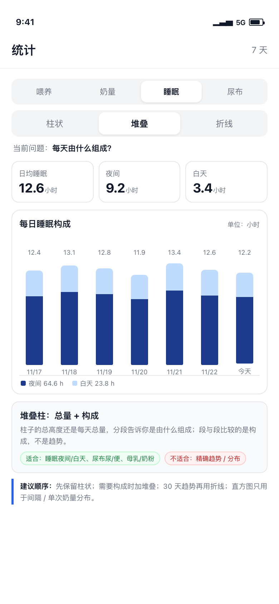
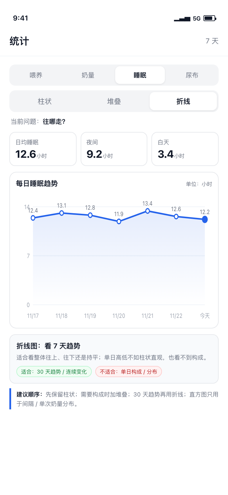
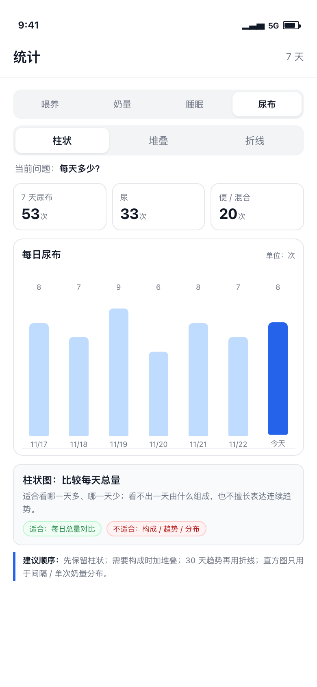
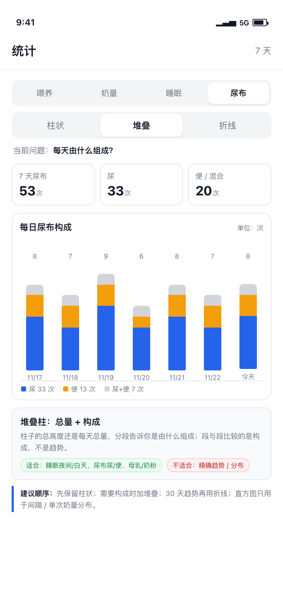
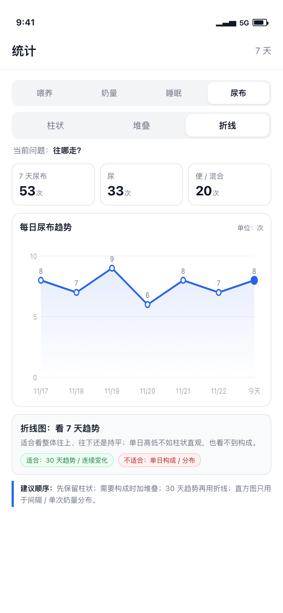

奶量柱状
每天总奶量；比较哪一天多、哪一天少。
同一组数据，三种问法：柱状看 每天多少，堆叠看 由什么组成，折线看 往哪走。 不是每个指标都需要三种图；先看问题，再选图。

每天总奶量；比较哪一天多、哪一天少。

每天总量不变，分段看母乳 / 奶粉构成。

7 天整体往上、往下还是持平；单日高低不如柱状直观。

每天总睡眠；适合看总量，不区分夜间 / 白天。

夜间 / 白天构成；比单看总时长更能解释「睡得够不够」。

7 天趋势；如果窗口拉长到 30 天，折线比柱状更有用。

每天总次数；适合回答「今天换了几次」。

尿 / 便 / 混合构成；比总次数更能看出排泄结构。

7 天趋势；单日次数波动大时，折线只适合看方向。
| 图 | 回答 | 适合 | 不适合 |
|---|---|---|---|
| 柱状 | 每天多少 | 每日总量对比、7 天概览 | 构成、趋势、分布 |
| 堆叠柱 | 由什么组成 | 睡眠夜间/白天、尿布尿/便、母乳/奶粉 | 精确趋势、分布 |
| 折线 | 往哪走 | 30 天趋势、连续变化 | 单日构成、分布 |
| 直方图 | 分布长什么样 | 喂养间隔、单次奶量 | 每日总量 |